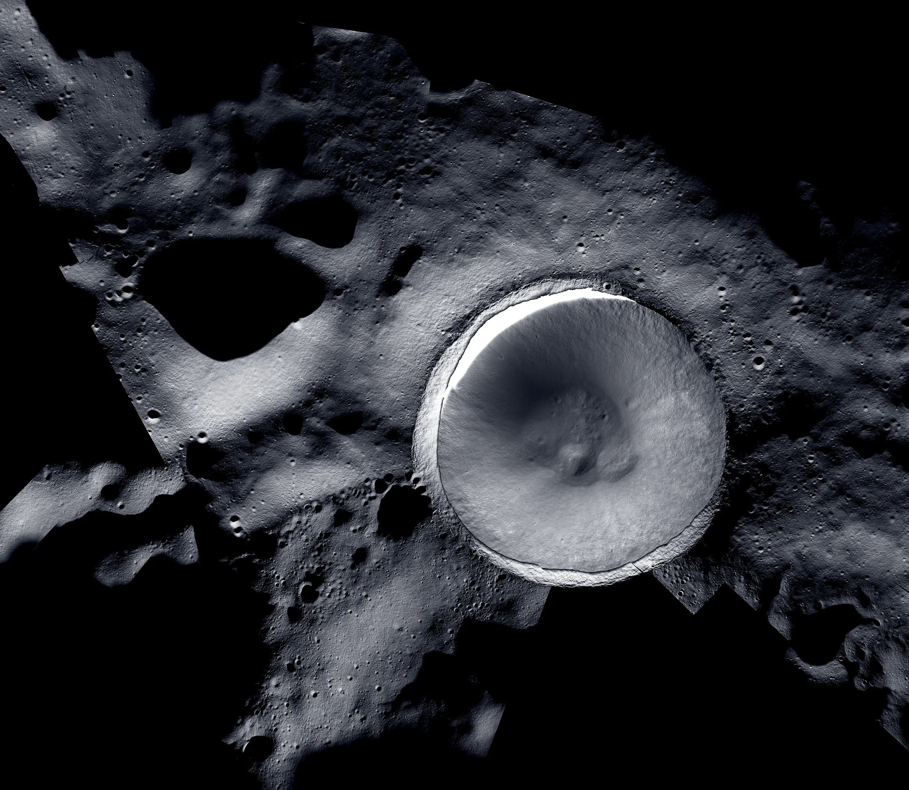
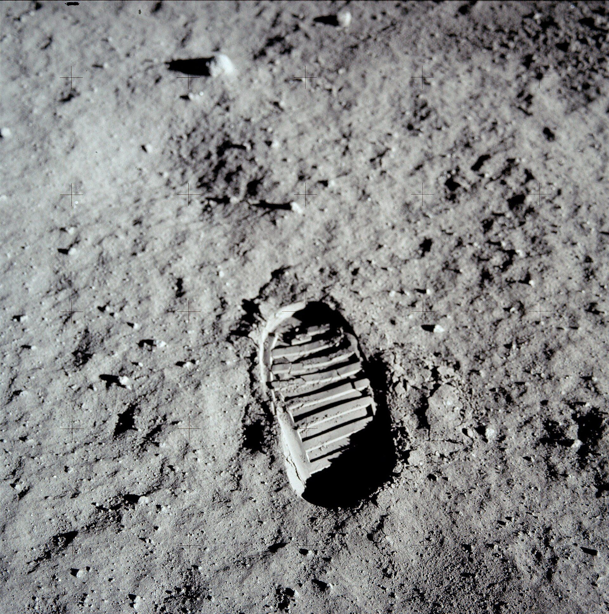
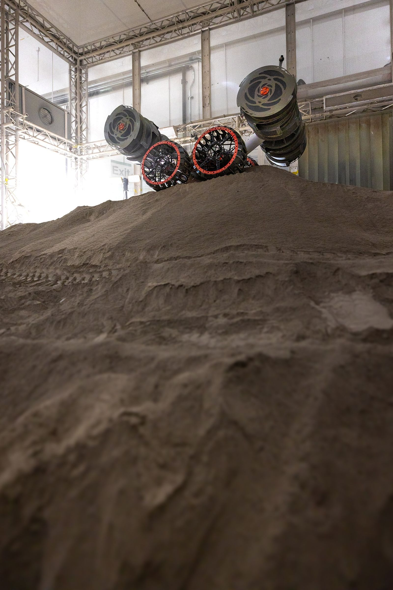

The landing pad run’s verified schedule: 12 tasks for 7 robots, done at hour 72 of a 336-hour deadline. The bronze row is the task the solver refused twice. Choose any task to read it.
Three runs
Each was recorded live on Nebius Token Factory on 24 October 2026 and replays in the browser. Pick a run to see what the checks refused, how Nemotron repaired it, and where it ended.
Landing pad
A 20 m landing pad and a 40 m blast berm near Shackleton crater: 7 robots, 14 days, no recharging.
VerifiedDid the printer’s battery hold? PR1 carries 4,000 Wh.
Repair 1Berm crest 160 → 150 m². Still 9 Wh over: refused.
Repair 2Crest 150 → 145 m². CP-SAT proves the whole schedule.
Impossible deadline
A 30 m heavy-lander pad and a 70 m spoil berm in 60 hours. The brief forbids a smaller pad.
No planCan the work finish by hour 60?
Pad zone Z1, one robot at a time75 h
Earliest finish CP-SAT can prove85 h
0 h30deadline 6090
GraphRefused: horizon and zone:Z1. Five pad tasks need 75 h in one zone.
Repairs 1–3Nemotron reorders the work three times. Each is refused again: an 82 h critical path, or zone Z1’s 75 h.
AdviceCP-SAT proves the earliest finish is 85 h: the deadline would have to move by 25 h.
Tight deadline
A foundation pit, a 70 m plume berm and a borrow strip in 3 days, before a crew lander arrives.
VerifiedDoes the plan finish by hour 72?
First graph, 14 tasksover 72 h
After 1 repair, 17 tasks52 h
0 h30deadline 72
GraphRefused with a core of 13 constraints: horizon, 10 precedence edges, robot:SV1, zone:Z2.
Repair 1Nemotron splits the digs and hauls per zone, so both excavators dig at once. CP-SAT proves it.
How it works
Three exchanges from the landing pad run, with its real numbers. The model reads and writes; the solver checks and decides.
First, write the brief in plain English.
Requirements · Nemotron 3.5 Lightning · 7.3 s
Structure
Size
Work
PAD1 pad
Ø 20 m, 0.4 m deep
excavate, compact, sinter
BERM1 berm
40 × 4 m, 1.5 m high
haul, compact, sinter
EX1, EX2 5,000 Wh
HL1, HL2 3,000 Wh
CP1 3,500 Wh
PR1 4,000 Wh
SV1 1,500 Wh
336 h
one robot per zone
Then Nemotron proposes the tasks, and the checks answer with numbers.
Task graph · Nemotron 3 Ultra, reasoning on · 12 tasks · 38 s
T9
sinter PAD1 · printer
314 m²
2,702 Wh
T10
sinter BERM1 · printer
160 m²
1,376 Wh
Refusedenergy:printer
Printer tasks need at least 4,095 Wh: 4,078 Wh of work and 18 Wh of travel. PR1 carries 4,000 Wh.
0 Whbudget 4,000
Last, repair from the proof. Try it yourself.
145150160
Refusedenergy:printer
PR1 needs 4,095 Wh of 4,000
0 Whbudget 4,000
2,702 pad + 1,376 crest + 18 travel
Nemotron’s first graph. Over by 95 Wh, so the checks send it back with this core.
CP-SAT’s receipt for the 145 m² plan
Precedence
18 edges hold
Robots
7, no overlaps
Safety zones
2, one robot each
Batteries, with travel
PR1 3,966 of 4,000 Wh
Deadline
72 of 336 h
Status
optimal, 13 ms, re-checked
Nemotron gets three repairs. In the last evaluation, 55 % of plans verified on the first graph and 86 % after repairs. When none verifies, CP-SAT tries single changes and returns only the ones it can prove: a later deadline, a bigger battery, one more robot.
Who does what
Nemotron 3.5 Lightning
Reads the brief into requirements.
Nemotron 3 Ultra
Proposes the task graph and every repair, reasoning on.
Rate table and validator
Turn quantities into hours and watt-hours, then check scope, supply order and batteries.
OR-Tools CP-SAT
Schedules and proves the plan, or returns the minimal core with its numbers.
Nemotron 3 Super
Explains the verified plan.
Every model call goes to Nebius Token Factory with a strict JSON schema.
Evidence
Across 66 live runs, 86 % ended with a plan the solver proved. Shown the solver’s proof, Nemotron repaired 70 % of refused plans; told only “refused”, 32 %.
Why the Moon
Earth, 1.3 light-seconds away
Earthrise over Compton crater · LRO, 2015
Nobody steers an excavator across that delay, and nobody on Earth catches a bad plan in time. The plan has to be right before it runs.

Shackleton crater, south pole
LROC and ShadowCam mosaic · NASA, 2023
The demo’s site, LS-1, is a plateau 1.8 km east of this rim: 80 by 80 m of loose regolith, a depot on its south edge, nothing to recharge from.

Regolith
Bootprint · Apollo 11, 1969
Loose to 40 cm over firmer ground. The pad is dug 0.4 m to firm regolith, compacted, then sintered 30 cm deep.
Batteries are the budget
Lunar rover practice drive · Apollo 16, 1972
With nothing to recharge from, each robot’s battery covers its whole job, driving included. The solver counts every leg it drives.

When a robot fails
RASSOR excavator test · NASA Kennedy, 2025
CP-SAT replans the remaining work in a median 9 ms. With three spares, the landing pad plan finishes on time in 86 % of 200 random-failure runs, up from 37 %.
The same loop fits earthworks on Earth: mine sites, disaster recovery and offshore work, wherever electric machines share batteries, exclusion zones and a deadline.
Models propose.Solvers prove.
The run opens on its brief. Step through the refusal, both repairs, the verified schedule and a robot failure at hour 10, then break any robot yourself before the 200 Monte Carlo runs.
Open a run
Replays the run recorded on Token Factory on 24 October 2026. No sign-in, no backend.